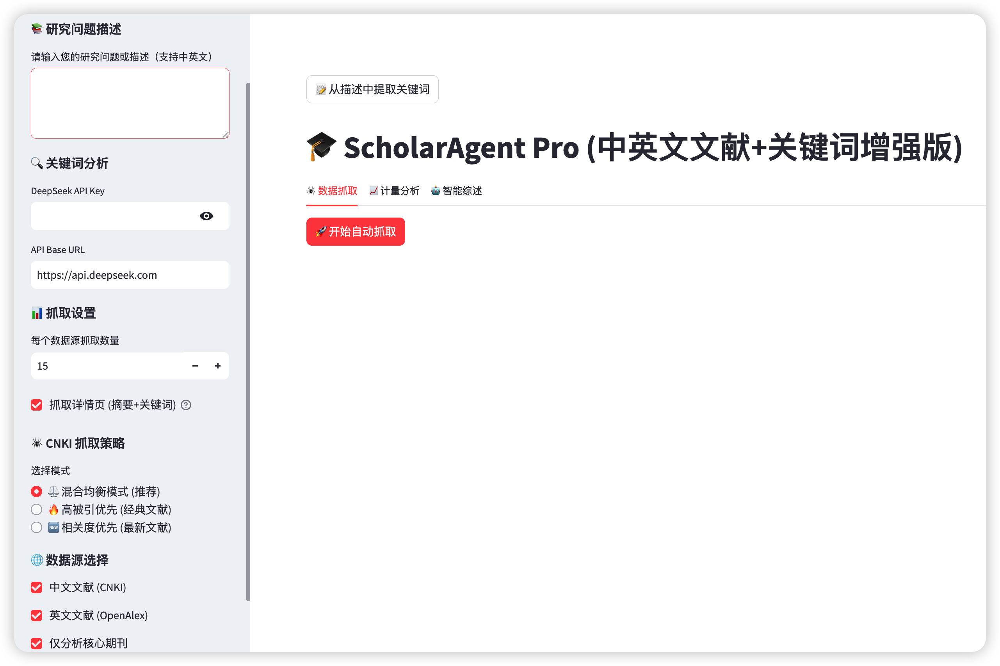
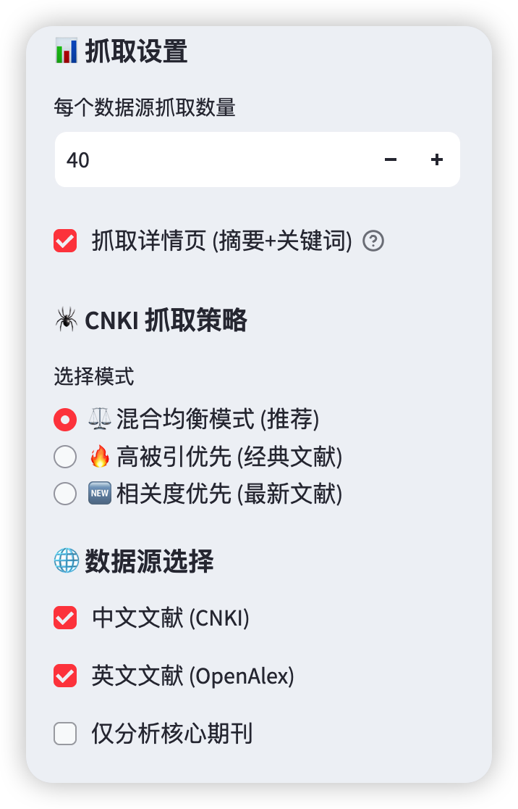
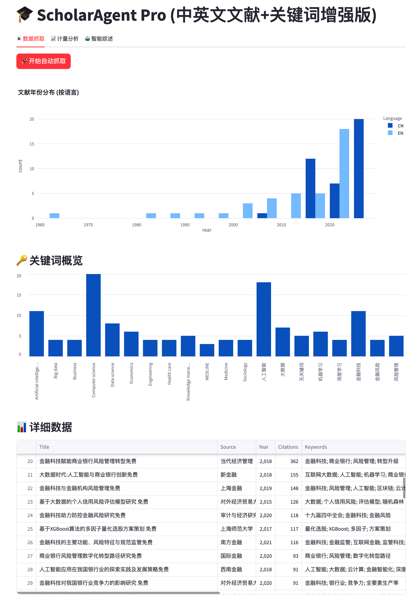
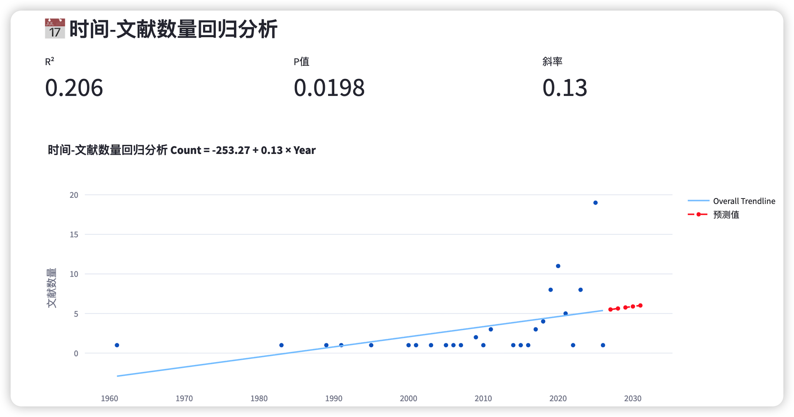
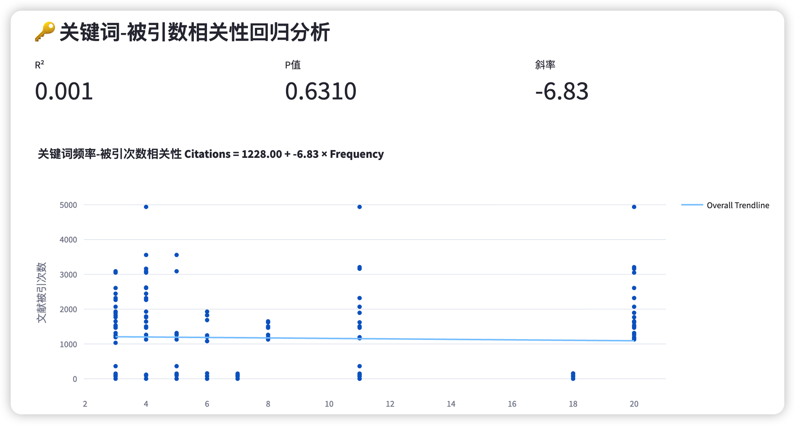
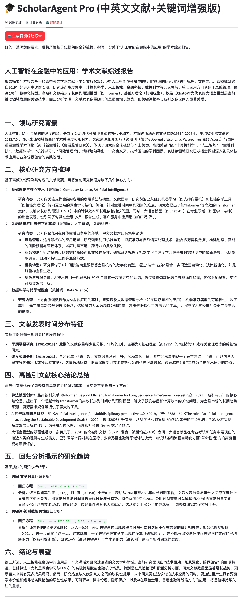
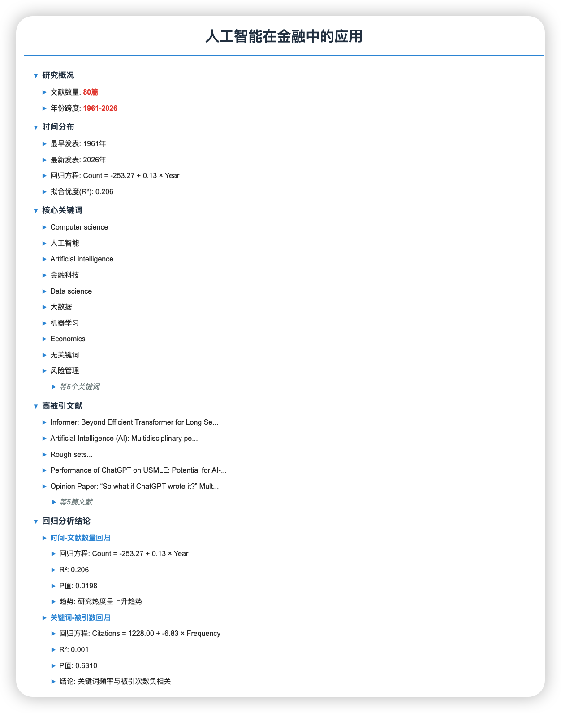

告别繁琐的手动检索与数据清洗。ScholarAgent Pro 集成双引擎抓取、计量经济学回归模型与生成式 AI，助您从海量文献中快速提炼核心洞察。
不仅仅是爬虫，更是具备分析能力的科研助理。系统围绕文献研究的痛点，提供从数据获取到报告生成的全链路解决方案。
打破语言壁垒，同时接入 CNKI（知网）与 OpenAlex（全球英文库）。内置智能反爬与期刊分级算法，支持自动筛选 CSSCI、北大核心及顶刊文献。
集成 DeepSeek 大模型，能够理解模糊的自然语言描述（如“研究数字经济的影响”），自动提取核心词并精准翻译为英文学术术语，提升检索查全率。
内嵌 Statsmodels 统计模块，自动构建一元线性回归模型。计算年份与发文量的趋势斜率，量化关键词频率与被引量的相关性 (R2、P值)，用数据验证研究热度。
基于检索到的数百篇摘要，AI 自动撰写结构化文献综述。涵盖研究背景、流派分类及趋势预测，并生成可交互的 HTML 知识图谱（Mindmap）。
基于 Streamlit 打造的响应式仪表盘，左侧侧边栏集中管理配置，右侧主区域实时呈现数据洞察，所见即所得。

集中管理 API 密钥、研究描述输入、关键词编辑及抓取策略配置。
顶部展示按语言分类的年份分布图，中部展示关键词云或频次，直观反映数据结构。
通过顶部 Tabs 切换“数据抓取”、“计量分析”与“智能综述”，流程清晰互不干扰。
赋能不同阶段的科研工作者，提升学术生产力
面对陌生的研究领域，快速梳理近 10 年的核心文献与演进脉络。通过关键词共现分析，寻找现有研究的空白点（Gap），为选题提供数据支撑。
利用时间序列回归模型预测学科热度，证明选题的前沿性。生成高被引文献综述，快速构建扎实的“国内外研究现状”章节。
同时检索计算机科学（英文库）与社会科学（中文库），通过双语关键词映射，发现不同学科对同一问题的不同视角与解决方法。
从配置到产出的完整五步工作流
摒弃传统的机械式搜索，ScholarAgent Pro 引入 DeepSeek 语义理解引擎。用户仅需以自然语言描述模糊的研究构想（例如“人工智能在金融中的应用”），系统即可自动解构语义，提取核心变量，并基于学术语料库生成精准的中英文检索关键词（Keywords）。支持人工二次校对，确保从检索源头即具备极高的信度与效度。
自动识别“影响”、“机制”、“路径”等学术关联词，转换为检索式逻辑。
在侧边栏中，您可以灵活制定抓取规则。系统提供三种智能模式以适应不同的研究目的，从源头把控数据质量。
平衡抓取高被引的经典文献与最新的前沿文献，确保研究视角既有深度又有广度。
优先抓取被引次数最高的文献，适用于快速梳理领域内的经典理论与奠基性工作。
优先抓取与关键词匹配度最高的文献，适用于追踪最新的研究动态与具体问题的解答。

抓取完成后，主界面会立即生成三个维度的可视化反馈。无需等待报告生成，即可在第一步快速判断当前检索词的有效性与数据分布。
直方图展示中英文献的时间跨度，识别学科爆发期与衰退期。
Top 20 高频词汇条形图，快速定位相关研究热点。
包含标题、来源、年份、被引数及清洗后关键词的完整数据集。

切换至“计量分析”标签页，获取两条关键的回归曲线

分析模型： Count = β0 + β1 × Year
核心价值： 红色的虚线不仅拟合了历史数据，更向后延伸 5 年，科学预测该领域未来的发文增长趋势。R2 值越高，预测越可信。

分析模型： Citations = β0 + β1 × Frequency
核心价值： 识别哪些关键词具有“高频且高被引”的特征。位于回归线上方的点代表该研究方向的影响力超出了其出现频率的预期，属于高价值选题。
点击生成按钮，Agent 将阅读所有抓取到的摘要，生成一份逻辑严密的学术综述。报告内容严格基于抓取到的数据，杜绝“AI 幻觉”。

包含模块：领域背景、核心技术流派分类、高被引文献解读、未来趋势预测。
系统同步生成 HTML 格式的思维导图，将非结构化的文献知识结构化展示。结合回归分析结论，直观呈现核心研究路径。

HTML 交互功能：支持节点折叠/展开，清晰展示核心关键词下的高被引文献与回归结论。